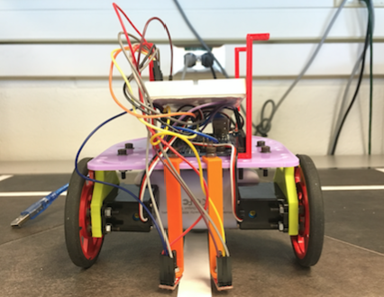
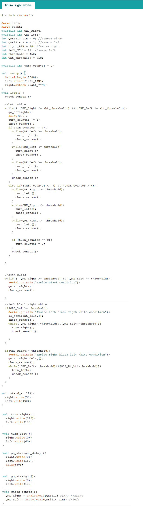

Goals
• To have the robot adjust as it traverses a straight line. • To have the robot traverse the grid in a figure eight.Line Detection
To ensure our robot could travel in a straight line, we added QRE113 IR line sensors. Before proceeding to writing the code, we tested the sensors and observed the values they output depending on the surfaces they covered. Using this method, we determined the threshold value we wanted to use to differentiate between black and white surfaces.
The sensors were then placed on the front of the robot, while very close to the ground to optimize the accurary of the sensor readings.
We separated the sensors by a distance slightly more than the width of the tape so that they could straddle the white lines that we wanted the robot to follow. This way, the sensors could detect either the white lines' reflected intensity or the black maze’s intensity. We coded the robot to continue its forward trajectories as long as both sensors detected black (assuming the robot was placed directly above the white line to begin with). As soon as one detected white light, the robot would briefly change the rotation of the servos to adjust its course.
The code for these adjustments are shown in the image below:

Our final conditions for the robot to follow the line were as follows:
• If both sensors detect white or both detect black, we programmed the robot to go straight. • If the left sensor detects black and the right white, we had the robot adjust right until both detect the same color again. • If the left sensor detects white and the right black, we had the robot adjust right until both detect the same color again.Figure Eight
In order to have the robot turn, we needed to have the robot both detect an intersection and start and stop the turn at precise moments. Our initial method was as follows:
• Once both sensors detected white (an intersection), we had the robot begin turning in the appropriate direction • While turning, we wanted the robot to detect when the outside sensor reached black, and then white again. This would signal the end of the turn, and the robot would return to moving straight. By 'outside sensor' here, we are referring to the sensor on the side opposite the turn direction, because its detection of the new white line signaled the completion of the turn.We implemented these ideas in the following code:
Our team encountered many issues before we were successful. For one, the robot would often overshoot the intersection, causing it to miss the line when it turned and run off the track. This issue was resolved by adding a delay to the intersection detection portion of the code, which allowed the robot to recognize that it was time to turn. Another issue we faced was that when the robot turned immediately upon detection, it would end up offset relative to the new line it was supposed to follow. This occurred because our sensors were in front of the robot, and to stay aligned with the new line, we needed the robot's center of rotation to stay directly above the intersection. To resolve this issue, we added a short time delay between detecting an intersection and turning to account for the distance between the sensors and the robot's turning axis. This allowed for the sensors to accurately detect the next straight line the robot needed to traverse.